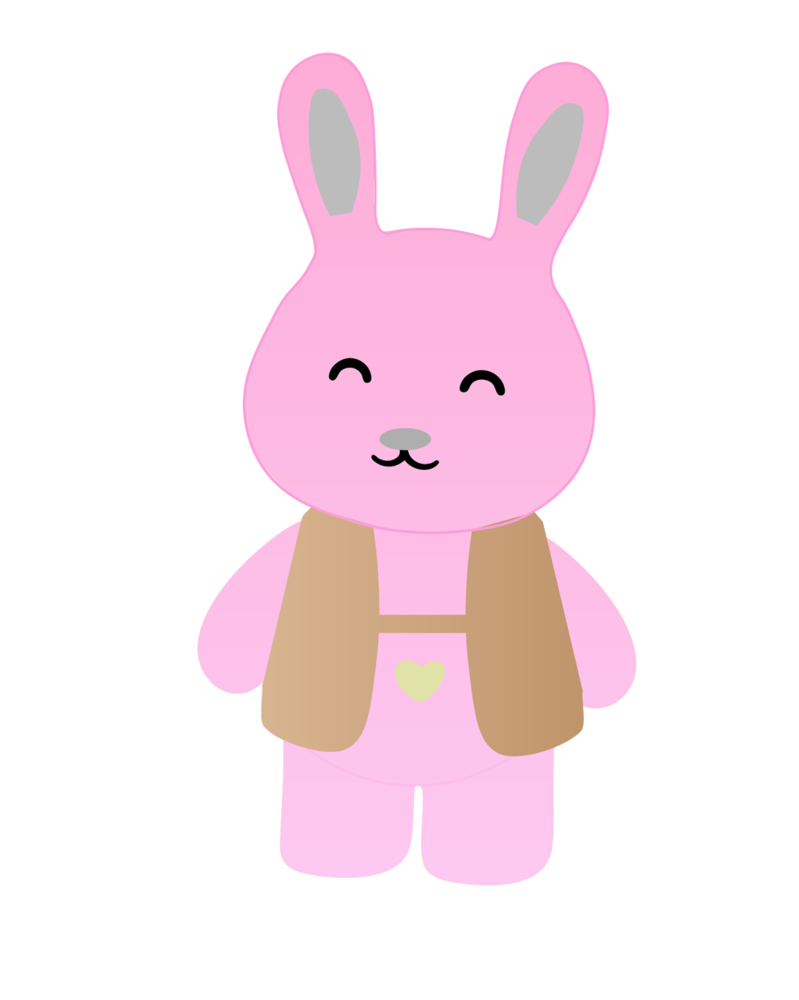
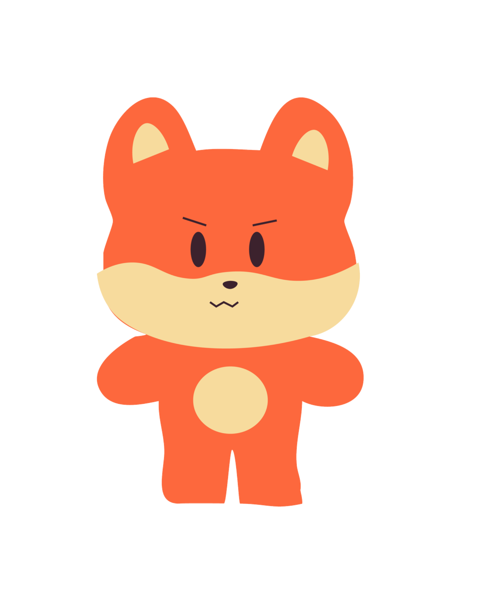

BUNNY – EL AVENTURERO
ProtagonistaUn conejito valiente y curioso que está dispuesto a superar cualquier obstáculo para encontrar el tesoro escondido.
Caminar, saltar y recoger llavesUna aventura llena de tesoros ✨

Un conejito valiente y curioso que está dispuesto a superar cualquier obstáculo para encontrar el tesoro escondido.
Caminar, saltar y recoger llaves
Un zorro astuto que intentará detener a Bunny durante su aventura mediante trampas y persecuciones.
Perseguir y activar obstáculos
Un mapache amigable que acompaña a Bunny durante su aventura y le proporciona instrucciones para superar los desafíos.
Dar pistas e instrucciones¡Completaste los tres niveles, superaste los desafíos de Foxy y encontraste el tesoro escondido!